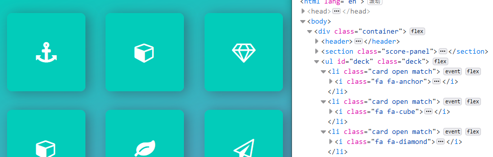
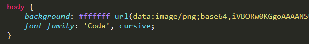
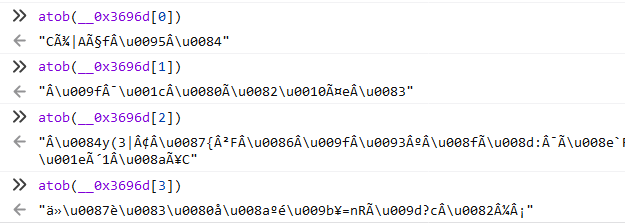

前言
之前两个朋友参加了某 CTF 比赛（他们已经忘了是哪个比赛），在一道安卓逆向题中提取到了一个网页小游戏，无奈小游戏的 JS 做过混淆和反调试，加上时间不够，当时就没拿下这道题。
最近我从它们那里要来了这个网页小游戏，练习一下 JS 逆向。
准备工作
看看目录结构和HTML
拿到文件，先看目录结构：
简单而典型的 Web 前端项目结构，没有什么特别的。
既然是个网页小游戏，当然还要看看它的 HTML 是怎么写的：
<!doctype html>
<html lang="en">
<head>
<meta charset="utf-8">
<title>Game</title>
<meta name="description" content="">
<link rel="stylesheet prefetch" href="css/font-awesome.min.css">
<link rel="stylesheet" href="css/app.css">
</head>
<body>
<div class="container">
<header>
<h1>Game</h1>
</header>
<section class="score-panel">
<ul class="stars">
<li><i class="fa fa-star"></i></li>
<li><i class="fa fa-star"></i></li>
<li><i class="fa fa-star"></i></li>
</ul>
<span class="moves">0</span> Moves
<div class="restart">
<i class="fa fa-repeat"></i>
</div>
</section>
<ul class="deck" id="deck">
</ul>
</div>
<script src="js/jquery.min.js"></script>
<script src="js/app.js"></script>
</body>
</html>HTML 部分看来没什么特别的，引入了 jquery 和 app.js，这里的 app.js 才是我关注的重点。
试玩
这个小游戏是一个记忆翻牌游戏，一共有 4×4=16 张牌，也就是 8 组牌。
翻出两张同样的牌之后，就可以让这两张牌保持朝上，否则两张牌都要翻回去。每次翻牌都会记录步数。
当翻到两组同样的牌时，会提示游戏结束，此时如果步数不为 4，会提示让玩家在 4 步以内完成。而把 8 组牌全部翻出来，并不会发生什么特别的事情。
尝试使用开发者工具
打开控制台，调试器会陷入无穷无尽的 debugger，显然是做了反调试。
查看调用堆栈，可知是从 _0x4c9a5d 这个函数内进入了 debugger。
到查看器去看 JS 渲染后的 DOM 结构，不难发现每张牌的种类与 class 相关。

在查看器里直接修改样式，发现令 .card 类的 font-size=0 失效后可以直接看到牌的种类。
也就是说，只要改一下 CSS 文件，就可以做到透视。
看看CSS
先把 .card 类的 font-size=0 注释掉。
然后扫一眼其它内容，发现一件很奇怪的事情，背景图片居然是用 Base64 形式直接写在 CSS 里的：

把 Base64 复制到浏览器地址栏按下回车，可以看到正是小游戏的背景图片，右键另存得到一张大小为 9.63KB 的 PNG 图片。
而在 /img 目录下有一张看起来一模一样，大小却只有 2.08KB 的图片。
两张大小不同却内容相同的图片，非常可疑，很有可能存在隐写情况。不过反正咱也不是要做 CTF 题，JS 逆向才是我的首要目标，之后再来研究这两张图片。
修改 CSS 后，再打开 index.html，在透视的情况下尝试玩这个小游戏。4 步翻出两组后，弹出对话框，提示用 BurpSuite，嗯，先不管，继续做 JS 逆向。
不过，看来真的就只要翻开两组牌就算作游戏结束了……出题的人这是在放水吧？
尝试查看window变量
尽管 app.js 做了反调试，几乎相当于把我们的调试器废掉了，然而控制台还是可以用的。
刷新页面，到控制台去，先看看 window 里面有什么再说：
不难发现有 gg 和 ss 两个整型变量，有可能是用来计算步数和翻出牌组数的。
存在 a、b、c、d 四个函数，函数名没有被混淆，这是一个可能有用的信息。
Myarr 数组 存储的显然是 16 张牌的类型。
再来看看两个 _0x 开头的东西。
_0x1141 是一个函数，里面有一个 Base64 解码器，有点意思：
_0x1411 是一个数组，里面放的是一些 Base64 字符串。根据我的经验，这个数组就是用来存放各种变量名、函数名和字符串常量的，而上面那个 _0x1141 应该就是用来取这些字符串的值的。
再次刷新页面，完成一次游戏后，再来看一下 window，发现多了一些东西，也改了一些东西：
现在基本可以确定 gg 就是用于记录翻出牌组数的，初始为 0，翻出一组后变为 1，再翻出一组则游戏结束，此时也没必要再改成 2了。
现在也可以百分百确定 ss 就是操作的步数。
可以发现多了一个 __0x3696d 数组，里面是 4 个 Base64 字符串。另外有一个字符串变量 xcsmo，值也为 __0x3696d。
用 atob 函数分别解码这几个 Base64 字符串，没得到有用结果：

考虑到这 4 个字符串里有 3 个带有等于号，显然把它们组合拼接是没什么用的。
最后试试使用 console，发现不能正常打日志，应该是被重定向了。不过，alert 可以正常使用（毕竟游戏本身也要做弹窗）。
不过，不让用 console，又能防得住什么呢？顶多也就吓唬吓唬小白而已。
开搞
格式化
app.js 只有一行，要做逆向，自然要把它格式化。直接用浏览器开发者工具里的调试器格式化即可，格式化以后原代码中的各种十六进制转义字符串都会变成可读的字符串，各种十六进制整数常量也会变成十进制。
新建一个 fucking.js 文件，把格式化以后的代码丢进去，然后到 index.html 里改成引入这个 fucking.js 文件。
格式化以后先看一眼代码，开头就是字符串数组赋值，嗯，熟悉的味道：
// 共249个Base64字符串
var _0x1411 = [
'Z01o',
'ZUhK',
// 中间省略……
'bHNL',
'TGZL'
];按照经验，这个数组的顺序估计在后面还会被打乱，呵呵，都是套路。
接下来一段是一个函数：
(function (_0x1f407c, _0xa4456f) {
var _0x23ff7b = function (_0x5512ce) {
while (--_0x5512ce) {
_0x1f407c['push'](_0x1f407c['shift']());
}
};
var _0x6356fe = function () {
var _0x14a619 = {
'data': {
'key': 'cookie',
'value': 'timeout'
},
'setCookie': function (_0x203115, _0x4f60ad, _0x1735f1, _0x554095) {
_0x554095 = _0x554095 || {
};
var _0x412bba = _0x4f60ad + '=' + _0x1735f1;
var _0x1e4c16 = 0;
for (var _0x1e4c16 = 0, _0x2a08bc = _0x203115['length']; _0x1e4c16 < _0x2a08bc; _0x1e4c16++) {
var _0x34f2ed = _0x203115[_0x1e4c16];
_0x412bba += '; ' + _0x34f2ed;
var _0x3fa8a0 = _0x203115[_0x34f2ed];
_0x203115['push'](_0x3fa8a0);
_0x2a08bc = _0x203115['length'];
if (_0x3fa8a0 !== !![]) {
_0x412bba += '=' + _0x3fa8a0;
}
}
_0x554095['cookie'] = _0x412bba;
},
'removeCookie': function () {
return 'dev';
},
'getCookie': function (_0x5359c4, _0x2281bb) {
_0x5359c4 = _0x5359c4 || function (_0x3d096d) {
return _0x3d096d;
};
var _0x3237d0 = _0x5359c4(new RegExp('(?:^|; )' + _0x2281bb['replace'](/([.$?*|{}()[]\/+^])/g, '$1') + '=([^;]*)'));
var _0x23f4b4 = function (_0x20d231, _0x2acbc9) {
_0x20d231(++_0x2acbc9);
};
_0x23f4b4(_0x23ff7b, _0xa4456f);
return _0x3237d0 ? decodeURIComponent(_0x3237d0[1]) : undefined;
}
};
var _0x4861b8 = function () {
var _0x36ab13 = new RegExp('\\w+ *\\(\\) *{\\w+ *[\'|"].+[\'|"];? *}');
return _0x36ab13['test'](_0x14a619['removeCookie']['toString']());
};
_0x14a619['updateCookie'] = _0x4861b8;
var _0xe7991f = '';
var _0x359685 = _0x14a619['updateCookie']();
if (!_0x359685) {
_0x14a619['setCookie'](['*'], 'counter', 1);
} else if (_0x359685) {
_0xe7991f = _0x14a619['getCookie'](null, 'counter');
} else {
_0x14a619['removeCookie']();
}
};
_0x6356fe();
}(_0x1411, 355));可以发现函数调用时传入了 _0x1411，函数开头的 _0x23ff7b 里面还对其进行 push 和 shift 这类操作，应该就是在调整 _0x1411 的顺序。
接下来的 _0x6356fe 和 _0x1411 已经没有关系了，表面上看它是在操作 cookie，但是仔细一看其实和 cookie 根本没有半点关系，最明显的就是 removeCookie 这个函数，直接返回字符串 dev。都做了代码混淆了，这整一段还留下这些可读的函数名，要说不是在误导人，我真不信。
一时半会儿看不出来这个 _0x6356fe 是干什么用的。
再次打开 index.html，发现 JS 居然不能正常运行，疑似进入了无穷递归：
可能就是在 setCookie 这个函数附近做了反格式化。
再来细读 _0x6356fe 这整一段，发现在 var _0x14a619 和 var _0x4861b8 中都是在定义各种东西，直到下面这一段才开始执行操作：
_0x14a619['updateCookie'] = _0x4861b8;
var _0xe7991f = '';
var _0x359685 = _0x14a619['updateCookie']();
if (!_0x359685) {
_0x14a619['setCookie'](['*'], 'counter', 1);
} else if (_0x359685) {
_0xe7991f = _0x14a619['getCookie'](null, 'counter');
} else {
_0x14a619['removeCookie']();
}先是把 _0x14a619['updateCookie'] 重定向到 _0x4861b8，然后通过调用它得到了一个用于 if-else_if-else 结构判断的布尔值。_0x359685 为假时，调用 _0x14a619['setCookie'] 进入无穷递归。
研究一下这个 _0x4861b8函数：
var _0x4861b8 = function () {
var _0x36ab13 = new RegExp('\\w+ *\\(\\) *{\\w+ *[\'|"].+[\'|"];? *}');
return _0x36ab13['test'](_0x14a619['removeCookie']['toString']());
};它调用了 removeCookie 函数的 toString 方法！
当你调用一个函数的 toString 方法，实际上会得到在定义这个函数时所编写的代码。跑一下下面这段代码：
function a() {
return 0;
}
function b() {return 0;}
console.log(a.toString());
console.log(b.toString());结果是：
function a() {
return 0;
}
function b() {return 0;}所以，格式化以后，removeCookie 函数就会变成多行，从而不满足正则表达式 \\w+ *\\(\\) *{\\w+ *['|"].+[\'|"];? *}。
那么破解反格式化也就很简单了，把 _0x4861b8 这个函数改成直接返回 true 即可。
这里注意不能暴力地直接把 _0x6356fe 这一整段全部删除，否则会影响 _0x1411 的顺序调整，导致后面的其它语句出现问题。
修改以后再打开 index.html，又出现了新的问题，这一次是在 _0x1141 函数里面卡死，且此时仍未进入 deubgger 状态（因为反调试代码还没起作用就卡死了）。
_0x1141 函数代码如下：
var _0x1141 = function (_0x36b633, _0x568f8c) {
_0x36b633 = _0x36b633 - 0;
var _0x46a8cd = _0x1411[_0x36b633];
if (_0x1141['initialized'] === undefined) {
(function () {
var _0x442ff8 = Function('return (function () ' + '{}.constructor("return this")()' + ');');
var _0x4a08d2 = _0x442ff8();
var _0x4c6606 = 'ABCDEFGHIJKLMNOPQRSTUVWXYZabcdefghijklmnopqrstuvwxyz0123456789+/=';
_0x4a08d2['atob'] || (_0x4a08d2['atob'] = function (_0x45ae9b) {
var _0x4a37b0 = String(_0x45ae9b) ['replace'](/=+$/, '');
for (var _0x27389e = 0, _0xf732f0, _0x21f772, _0x12957d = 0, _0x32b485 = ''; _0x21f772 = _0x4a37b0['charAt'](_0x12957d++); ~_0x21f772 && (_0xf732f0 = _0x27389e % 4 ? _0xf732f0 * 64 + _0x21f772 : _0x21f772, _0x27389e++ % 4) ? _0x32b485 += String['fromCharCode'](255 & _0xf732f0 >> ( - 2 * _0x27389e & 6)) : 0) {
_0x21f772 = _0x4c6606['indexOf'](_0x21f772);
}
return _0x32b485;
});
}());
_0x1141['base64DecodeUnicode'] = function (_0x4a0c8c) {
var _0x18e806 = atob(_0x4a0c8c);
var _0x247b5d = [
];
for (var _0x4d4ae1 = 0, _0xfcb5ed = _0x18e806['length']; _0x4d4ae1 < _0xfcb5ed; _0x4d4ae1++) {
_0x247b5d += '%' + ('00' + _0x18e806['charCodeAt'](_0x4d4ae1) ['toString'](16)) ['slice']( - 2);
}
return decodeURIComponent(_0x247b5d);
};
_0x1141['data'] = {
};
_0x1141['initialized'] = !![];
}
if (_0x1141['data'][_0x36b633] === undefined) {
var _0xf0e55d = function (_0x585984) {
this['rc4Bytes'] = _0x585984;
this['states'] = [
1,
0,
0
];
this['newState'] = function () {
return 'newState';
};
this['firstState'] = '\\w+ *\\(\\) *{\\w+ *';
this['secondState'] = '[\'|"].+[\'|"];? *}';
};
_0xf0e55d['prototype']['checkState'] = function () {
var _0x42ca96 = new RegExp(this['firstState'] + this['secondState']);
return this['runState'](_0x42ca96['test'](this['newState']['toString']()) ? --this['states'][1] : --this['states'][0]);
};
_0xf0e55d['prototype']['runState'] = function (_0x5bffed) {
if (!Boolean(~_0x5bffed)) {
return _0x5bffed;
}
return this['getState'](this['rc4Bytes']);
};
_0xf0e55d['prototype']['getState'] = function (_0x29a616) {
for (var _0x9fc071 = 0, _0x69531f = this['states']['length']; _0x9fc071 < _0x69531f; _0x9fc071++) {
this['states']['push'](Math['round'](Math['random']()));
_0x69531f = this['states']['length'];
}
return _0x29a616(this['states'][0]);
};
new _0xf0e55d(_0x1141) ['checkState']();
_0x46a8cd = _0x1141['base64DecodeUnicode'](_0x46a8cd);
_0x1141['data'][_0x36b633] = _0x46a8cd;
} else {
_0x46a8cd = _0x1141['data'][_0x36b633];
}
return _0x46a8cd;
};这个函数定义以后没有直接调用，在 fucking.js 里搜索，很容易发现到处都是它的身影，调用方式都是 _0x1141('0x1') 和 _0x1141('0xce') 之类的，不难判断它确实是用于取 _0x1411 数组内的字符串的，它的第二个参数 _0x568f8c 实际上没有任何用处，而 _0x36b633 实际上是下标。
一眼扫下来，不难发现这一段似曾相识：
var _0xf0e55d = function (_0x585984) {
this['rc4Bytes'] = _0x585984;
this['states'] = [
1,
0,
0
];
this['newState'] = function () {
return 'newState';
};
this['firstState'] = '\\w+ *\\(\\) *{\\w+ *';
this['secondState'] = '[\'|"].+[\'|"];? *}';
};
_0xf0e55d['prototype']['checkState'] = function () {
var _0x42ca96 = new RegExp(this['firstState'] + this['secondState']);
return this['runState'](_0x42ca96['test'](this['newState']['toString']()) ? --this['states'][1] : --this['states'][
};
_0xf0e55d['prototype']['runState'] = function (_0x5bffed) {
if (!Boolean(~_0x5bffed)) {
return _0x5bffed;
}
return this['getState'](this['rc4Bytes']);
};这些正则表达式，显然就是前面用于反格式化的单行判断正则。
不管三七二十一，先把正则匹配的地方改成 return true 试试再说。
再次打开 index.html 发现代码可以正常运行了。
处理_0x1141(i)
代码中到处都在通过 _0x1141(i) 获取 _0x1411 中的字符串，我们先把这些 _0x1141(i) 换成可以直接阅读的字符串。
先通过控制台获取顺序调整后的 _0x1411 数组：
全部复制出来就好。
然后用写个程序把这些该死的 _0x1141(i) 全部替换掉：
import org.springframework.util.Base64Utils;
import java.io.File;
import java.io.FileInputStream;
import java.io.FileNotFoundException;
import java.util.Scanner;
/**
* @author yuan
* @version 0.1
* @date 2019/10/18
*/
public class JsFucking {
private static final String[] STRINGS = {
"eXVj"
, "ZmEtZGlhbW9uZA=="
, "ZmEtcGFwZXItcGxhbmUtbw=="
, "ZmEtYW5jaG9y"
// 中间的省略……
, "ZGVidWdnZXI="
, "aHRv"
};
public static String decode(String base64String) {
return new String(Base64Utils.decodeFromString(base64String));
}
public static String transform(int i, String text) {
String hex = Integer.toHexString(i);
String toBeReplaced = "_0x1141('0x" + hex + "')";
return text.replace(toBeReplaced, "'" + decode(STRINGS[i]) + "'");
}
public static void main(String[] args) throws FileNotFoundException {
// 读取文件
Scanner scanner = new Scanner(new FileInputStream(new File("fucking.js")));
StringBuilder textBuffer = new StringBuilder();
while (scanner.hasNextLine()) {
textBuffer.append(scanner.nextLine());
textBuffer.append("\n");
}
scanner.close();
// 转换
String text = textBuffer.toString();
for (int i = 0; i < STRINGS.length; i++) {
text = transform(i, text);
}
System.out.println(text);
}
}替换完成后，代码读起来就方便多了。
如果不想在程序里写 Base64 解码，也可以像这样直接获取解码后的数组，再在程序里替换：
arr = []
for (var i=0;i<249;i++){
arr[i] = _0x1141(i);
}不难发现，经过一次 Base64 解码之后，有部分字符串仍然是 Base64，代码中多处使用 atob 进行第二次解码。这些地方都值得重点关注，不过，在这之前，还是先把恶心的反调试的搞掉吧！
反反调试
前面我们从调用堆栈得知，debugger 是在 0x4c9a5d 处的匿名函数进入的，要解决反调试，显然这里必须得看看。
通过 CTRL+F 查找 0x4c9a5d，在 fucking.js 的末尾找到了这一段代码（又是在尾部，呵呵）：
var _0x25cf83 = function () {
var _0x8500bc = {
'LIM': function _0x2cd9f3(_0x306251, _0xd153ad) {
return _0x306251 !== _0xd153ad;
},
'IrU': function _0x389b73(_0x1d4a8f, _0x3f5aa7) {
return _0x1d4a8f + _0x3f5aa7;
},
'smn': function _0x451b03(_0x1fbf33, _0x4a4c9) {
return _0x1fbf33 / _0x4a4c9;
},
'Qsc': function _0x478a5c(_0x58ffc9, _0xf137dc) {
return _0x58ffc9 === _0xf137dc;
},
'Toi': function _0x41fb91(_0x22f563, _0x5f069e) {
return _0x22f563 % _0x5f069e;
},
'hto': function _0x42d5ff(_0x3e7cbe, _0x16782d) {
return _0x3e7cbe(_0x16782d);
}
};
function _0x4c9a5d(_0x394373) {
if (_0x8500bc['LIM'](_0x8500bc['IrU']('', _0x8500bc['smn'](_0x394373, _0x394373)) ['length'], 1) || _0x8500bc['Qsc'](_0x8500bc['Toi'](_0x394373, 20), 0)) {
(function () {
}
[
'constructor'
]('debugger') ());
} else {
(function () {
}
[
'constructor'
]('debugger') ());
}
_0x8500bc['hto'](_0x4c9a5d, ++_0x394373);
}
try {
_0x8500bc['hto'](_0x4c9a5d, 0);
} catch (_0x2463d0) {
}
};_0x8500bc 很明显是把加法、除法、判等、取模、函数执行这五个操作封装了而已，其实在整个 fucking.js 文件里有很多处类似的代码。
_0x4c9a5d 中的 if 块简单翻译一下其实就是 if ( (''+(_0x394373/_0x394373)).length !== 1 || _0x394373 % 20 === 0 )，这里的 _0x394373 其实是一个整数。而 _0x8500bc['hto'](_0x4c9a5d, ++_0x394373); 这一句就是在递归调用，造成无穷 debugger。当然，其实也没什么看懂这个函数的必要，直接把函数体全部注释掉就好。
搞完之后重新打开 index.html，发现在下面这段代码这里也进入了 debugger：
setInterval(function () {
var _0x3fe12b = {
'bNm': function _0x539eff(_0x2e6435, _0x1adba7) {
return _0x2e6435 > _0x1adba7;
},
'eIB': function _0x539e7c(_0x23efc6, _0x449a76) {
return _0x23efc6 - _0x449a76;
}
};
(function () {
var _0x1c1749 = new Date();
debugger;
return _0x3fe12b['bNm'](_0x3fe12b['eIB'](new Date(), _0x1c1749), 100);
}());
}, 100);很简单，整段注释掉就行。
还可以继续在 fucking.js 里面搜索 debugger 和 setInterval，把所有可疑的代码都注释掉，不过这里其实只搞定上面这两处就够了。
再次打开页面，发现不会再进入 debugger，反反调试成功。
恢复console（非必要）
在做 JS 逆向时，console 打日志还是比较常用的，这个 JS 文件把 console 给破坏掉了，让我有点不爽，所以，尽管这一步不是必要的，我还是把 console 恢复了再搞别的。
直接搜索 console，定位到这段代码：
var _0x6e15d8 = function () {
};
var _0x3e7522 = _0x25aba8['UTw'](_0x335ecd);
if (!_0x3e7522['console']) {
_0x3e7522['console'] = function (_0x4203eb) {
var _0x45a5a5 = '3|2|0|8|6|7|1|4|5' ['split']('|'),
_0x16723b = 0;
while (!![]) {
switch (_0x45a5a5[_0x16723b++]) {
case '0':
_0x15d4e2['warn'] = _0x4203eb;
continue;
case '1':
_0x15d4e2['exception'] = _0x4203eb;
continue;
case '2':
_0x15d4e2['log'] = _0x4203eb;
continue;
case '3':
var _0x15d4e2 = {
};
continue;
case '4':
_0x15d4e2['trace'] = _0x4203eb;
continue;
case '5':
return _0x15d4e2;
continue;
case '6':
_0x15d4e2['info'] = _0x4203eb;
continue;
case '7':
_0x15d4e2['error'] = _0x4203eb;
continue;
case '8':
_0x15d4e2['debug'] = _0x4203eb;
continue;
}
break;
}
}(_0x6e15d8);
} else {
var _0x404414 = '1|5|3|6|4|2|0' ['split']('|'),
_0x49ae44 = 0;
while (!![]) {
switch (_0x404414[_0x49ae44++]) {
case '0':
_0x3e7522['console']['trace'] = _0x6e15d8;
continue;
case '1':
_0x3e7522['console']['log'] = _0x6e15d8;
continue;
case '2':
_0x3e7522['console']['exception'] = _0x6e15d8;
continue;
case '3':
_0x3e7522['console']['debug'] = _0x6e15d8;
continue;
case '4':
_0x3e7522['console']['error'] = _0x6e15d8;
continue;
case '5':
_0x3e7522['console']['warn'] = _0x6e15d8;
continue;
case '6':
_0x3e7522['console']['info'] = _0x6e15d8;
continue;
}
break;
}
}其实只需要处理 else 块即可。把这些函数重定向语句全部注释掉，搞定。
这里有两段 while(!![]){break;} 结构，!![] 其实就是 true，在 while(true) 里面写一段代码，最后 break，纯属脱裤子放屁。正常编程当然不会这样写，但在混淆过的 JS 代码中似乎还挺常见的，这样搞可以增加一层嵌套，恶心读代码的人。
while 块里面是 switch(i++) {case} 结构，实际上相当于一个 for-i 循环，而且需要注意下标要从 '1|5|3|6|4|2|0' 这类字符串中取，这种结构在混淆代码中也是比较常见的。
搞懂abcd四个函数
现在我们已经解决了反格式化和反调试，接下来可以为所欲为了。
现在还没搞明白的其实就只有 a、b、c、d 四个函数了。
扫一眼整个 JS 文件，会发现这样一段孤零零的代码：
c();
$('.restart') ['click'](function () {
var _0x3df382 = {
'jrm': function _0x1fa289(_0x4eed9e) {
return _0x4eed9e();
}
};
_0x3df382['jrm'](c);
});显然 c() 就是初始化和重置用的了，但也不排除它还有其它作用。
至于 b()，先看看它的代码：
function b(_0x5bd23e) {
var _0x41b815 = {
'Wao': function _0x2f0970(_0x143d10, _0x480efb) {
return _0x143d10 !== _0x480efb;
},
'ZWP': function _0x348253(_0x1ba02f, _0x41d55f) {
return _0x1ba02f * _0x41d55f;
}
};
var _0x2b5d66 = _0x5bd23e['length'],
_0x5c0992,
_0x2fdf45;
while (_0x41b815['Wao'](_0x2b5d66, 0)) {
var _0x472699 = '0|3|2|1|4' ['split']('|'),
_0x4f7c22 = 0;
while (!![]) {
switch (_0x472699[_0x4f7c22++]) {
case '0':
_0x2fdf45 = Math['floor'](_0x41b815['ZWP'](Math['random'](), _0x2b5d66));
continue;
case '1':
_0x5bd23e[_0x2b5d66] = _0x5bd23e[_0x2fdf45];
continue;
case '2':
_0x5c0992 = _0x5bd23e[_0x2b5d66];
continue;
case '3':
_0x2b5d66 -= 1;
continue;
case '4':
_0x5bd23e[_0x2fdf45] = _0x5c0992;
continue;
}
break;
}
}
return _0x5bd23e;
}好像不是很明显，那就先打个断点，运行后发现传入的参数就是 Myarr：
结合代码中的 Math['floor'](_0x41b815['ZWP'](Math['random'](), _0x2b5d66))，不难推测是在洗牌。
接下来看 d()：
var d = function () {
var _0x520c63 = {
'yhR': function _0x3d82ec(_0x29038b, _0x48050f) {
return _0x29038b(_0x48050f);
},
'QkR': function _0x47325b(_0x1c9cf7, _0xe61305) {
return _0x1c9cf7 + _0xe61305;
},
'bbi': function _0x5d9ea5(_0x2f0d78, _0x1578ff) {
return _0x2f0d78 + _0x1578ff;
},
'YGB': function _0x386c6d(_0x4828fc, _0x23bee5) {
return _0x4828fc + _0x23bee5;
},
'AtG': function _0x5641db(_0x13bfa5, _0x2dda21) {
return _0x13bfa5 + _0x2dda21;
},
'Wmj': function _0x570a43(_0x32910c, _0x2d39de) {
return _0x32910c + _0x2d39de;
},
'XWQ': function _0x992d73(_0x13947a, _0x3d8e5b) {
return _0x13947a + _0x3d8e5b;
},
'mgE': function _0x3ee468(_0x34fa4d, _0x1045fc) {
return _0x34fa4d(_0x1045fc);
}
};
h = _0x520c63['yhR'](atob, 'SW50ZWxsaWdlbmNlIGlzIHRoZSBhYmlsaXR5IHRvIGFkYXB0IHRvIGNoYW5nZS4gTGlmZSB3b3VsZCBiZSB0cmFnaWMgaWYgaXQgd2VyZW4ndCBmdW5ueS4=');
z = _0x520c63['QkR'](_0x520c63['bbi'](_0x520c63['YGB'](_0x520c63['AtG'](h['substr'](31, 1), h['substr'](4, 1)), h['substr'](51, 1)), h['substr'](63, 1)), h['substr'](62, 1));
q = _0x520c63['Wmj'](_0x520c63['XWQ'](_0x520c63['XWQ'](z, '("'), _0x520c63['mgE'](atob, 'R2FtZSBvdmVyISBDYW4geW91IGZpbmlzaCB0aGUgZ2FtZSBpbiA0IG1vdmVzPw==')), '")');
_0x520c63['mgE'](eval, q);
};h 这一串 Base64 解码后是 “Intelligence is the ability to adapt to change. Life would be tragic if it weren’t funny.”。刚看到这一句东西我还以为是作者在嘲讽：“你个呆瓜，叫你用 BurpSuite，你还在这看 JS，不懂得变通”。
然后我再往下看，z 这个字符串是在 h 里面截取字母拼接，然后拼出来个 “alert”……
q 是 “Game over! Can you finish the game in 4 moves?”。
看来 d() 这个函数是 4 步以上完成游戏时执行的。
a 的作用还无法这么简单地搞懂，现在我们可以利用之前得到的一条重要线索：_0x1411 数组中有些字符串解码之后仍是 Base64，必须在代码中再次解码。
继续找下一个 atob，跑到了 c() 里面（完整代码就不贴了）：
case '8':
var _0x28347b = _0x5ac296['eMG'](setInterval, function () {
gg = _0x25aba8['LdO'](parseInt, sessionStorage['getItem']('gg'));
ss = _0x25aba8['LdO'](parseInt, sessionStorage['getItem']('ss'));
if (_0x25aba8['QXJ'](gg, 1) && _0x25aba8['QXJ'](window['gg'], 1) && _0x25aba8['vMv'](ss, 4)) {
var _0x31842c = new XMLHttpRequest();
_0x31842c['open'](_0x25aba8['LdO'](atob, 'UE9TVA=='), _0x25aba8['LdO'](atob, 'aHR0cDovL2cuY24veW91LmNhbi5maW5kL3RoZS9zZWNyZXQvaW4/dGhlPWltYWdlJnQ9'));
_0x31842c['send']();
window['clearInterval'](_0x28347b);
}
}, 500);
continue;'UE9TVA==' 和 'aHR0cDovL2cuY24veW91LmNhbi5maW5kL3RoZS9zZWNyZXQvaW4/dGhlPWltYWdlJnQ9' 解码之后分别是 'POST' 和 'http://g.cn/you.can.find/the/secret/in?the=image&t='。
也就是说这里会发 POST 请求，而这个 URL 显然是在给提示。图片里面找秘密，显然是隐写了。这和前面得到其它解题线索相吻合（两张大小不同的图片、弹窗让用 BurpSuite），当然我的关注点不在于做 CTF 题，而在于 JS 逆向。
继续找其它 atob，然后解码看是什么字符串。容易发现，a() 里面有大量的 atob 和 subString 配合的代码，显然又是在搞拼接。比如这里：
case'1':
// YnVycHN1aXRl解码是burpsuite
d = _0x3e0016['gII'](_0x3e0016['gII'](_0x3e0016['Dsj'](decodeURIComponent, '%28%22'), window[_0x3e0016['foy'](atob, 'YnVycHN1aXRl')]), '\")');
continue;
case'2':
// V0lORE9X解码是WINDOW ; YWJjZGU=解码是abcde ； d2hvaXN0aGVsdWNreW1hbg==解码是whoistheluckyman ；配合substr，这里也是在拼alert
c = _0x3e0016['WDP'](_0x3e0016['WDP'](_0x3e0016['WDP'](_0x3e0016['WkK'](_0x3e0016['EiR'](_0x3e0016['EiR'](_0x3e0016['DIE'](_0x3e0016['CmQ'](atob, 'V0lORE9X')['toLowerCase'](), _0x3e0016['CmQ'](decodeURIComponent, _0x3e0016['hmC']('%5b%', _0x3e0016['hmC'](_0x3e0016['Zae'](4, 5), 2)))), _0x3e0016['cTg'](atob, 'YWJjZGU=')['substr'](0, 1)), _0x3e0016['CLB'](atob, 'd2hvaXN0aGVsdWNreW1hbg==')['substr'](8, 1)), _0x3e0016['hmC'](_0x3e0016['DGP'](console['log'](a = function () {
// 后面的不贴了，是在构造 alert 的剩下三个字母，又长又臭继续往下找，可以找到这么一段：
case '1':
girl = 'cokey',
xcsmo = '__0x3696d',
__0x3696d = [
'Q8O+fEHDp2bClQ3ChA==',
'wp/CrxzCgMOCEMOkZcKD',
'woR5KDN8wqLCh3vCskbChsKfwpPCusKPw406wq/DjmBSRcOuCH3CscOCKHfDtcKzfMKRFMKsKsKRVMOFEsOmw7XCrR7DkHhDDsK/LsORWcKXwqzDo0PDk8KTNsO5w7nCuR7DtDHCisOlQw==',
'5LuH6IOA5Yq66ZulPW5Sw50/Y8KCwrzCoQ=='
];
continue;
case '2':
(function (_0x183bf2, _0x2f3b1c) {
var _0x482104 = function (_0x5e5475) {
while (--_0x5e5475) {
_0x183bf2['push'](_0x183bf2['shift']());
}
};
_0x421411['nhq'](_0x482104, ++_0x2f3b1c);
}(__0x3696d, 256));
continue;
case '3':
girl = 'cokey';
continue;
case '4':
var _0x421411 = {
'nhq': function _0xbcffa3(_0x45dbff, _0x30a017) {
return _0x1062f9['KjR'](_0x45dbff, _0x30a017);
}
};
continue;
case '5':
_0x1062f9['KjR'](atob, _0x1062f9['Tdu'](_0x13598f, '0x2', 'x^@a'));
continue;首先 case '1' 和 case '2' 里面，出现了 xcsmo 和 __0x3696d，这是一开始我们通过 window 看到过的。
case '5' 这里的 _0x1062f9['KjR'] 是用来执行函数的。这整一句应该是有一个字符串返回值的，然而却没有用任何变量去接收，很可疑。
在 case '5' 这个地方打个断点，然后 4 步完成游戏。
果然，断在这里了。然后把 _0x1062f9['KjR'](atob, _0x1062f9['Tdu'](_0x13598f, '0x2', 'x^@a')) 拿到控制台去运行：
"please goto: https://github.com/kingthy/imagemask"，呵呵，提示去 github 拿一个 PNG 图片隐写内容读取工具。
之后再往下找，没有什么有意义的 atob 了。
a() 整个函数的代码又长又臭，但是可以看到一些 CSS 操作的代码，应该是在做控制翻牌效果之类的事情。
至此，除了 a() 有些代码懒得看以外，整个 JS 文件的逆向完成了。
把题做一下
让我用 BurpSuite，我偏要用 Fiddler。
打开抓包工具，在 4 步完成游戏时，能抓到 POST http://g.cn/you.can.find/the/secret/in?the=image&t= 的包。
因为没专门学过隐写，我到 github 上下载了 imagemask 这个工具，然后用它从 9.63KB 的图片里，拿到了隐写的字符串 ppassword: 5025d58c109de120a142d3c27a432989，这估计就是重要线索了。之后的问题应该要在 so 层解决，那才是安卓逆向的真正战场。
正常做这道题，应该是发现图片有问题，然后手动分析 PNG 隐写。
不过，还是那句话，咱今天是来练习 JS 逆向的！